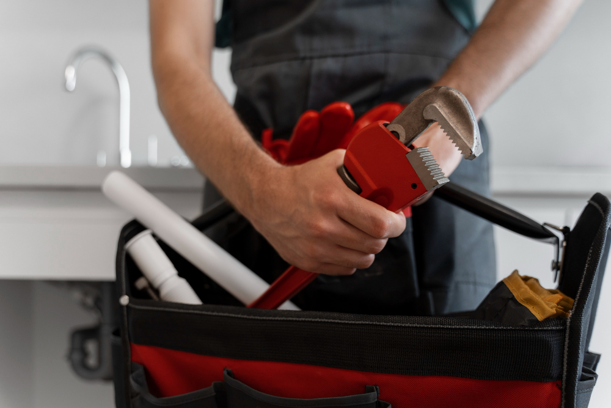

Ferramentas para hidráulica

Conheça os tipos de ferramentas para hidráulica
As ferramentas para hidráulica são fundamentais para que um encanador possa realizar serviços específicos. Os instrumentos adequados e de qualidade, facilitam o dia a dia do profissional e garantem maior eficiência na instalação ou manutenção de sistemas hidráulicos.
Sendo responsável pela implementação e manutenção da rede, usados para água potável, esgoto e drenagem em sistemas de encanamento, o encanador trabalha com situações como, vazamentos, limpezas, substituições de peças, desentupimento, entre outros. Isso exige que o profissional recorra a uma variedade de ferramentas. Conheça!
1. Cortador de tubo
Essa ferramenta oferece praticidade voltada para o corte de tubulações em geral. Existem cortadores que suportahm canos de PVC, cobre e plástico, de acordo com a especificação do modelo.
2. Arco de serra
Utilizado da mesma forma, para cortar tubos, mas de forma manual, o arco de serras ferramentas é ajustável, e pode ser utilizado em trabalhos com os variados tamanhos de lâminas, para tipos de canos diferentes.
3. Alicate bomba d’água
O alicate bomba d’água, também conhecido como alicate bico de papagaio, é ideal para fixar, segurar, torcer e apertar peças como torneiras, registros, tubos e canos. Devido à sua parte ajustável, é possível regular a abertura do bico do alicate e travá-lo para trabalhar com objetos de diferentes diâmetros.
4. Chave inglesa
A chave inglesa, conhecida como chave ajustável, é muito indicada para fixar ou soltar parafusos e porcas que fazem parte do sistema hidráulico. Essa ferramenta está disponível em vários tamanhos.
5. Chave grifo
Considerado um material de alta precisão, a chave grifo é usada para apertar peças, porcas e canos. É própria para montagens e desmontagens de tubulações em geral e, graças a sua regulagem, se adapta a inúmeros tamanhos de peças.
6. Chave grifo para lavatório
Assim como a chave grifo comum, é ideal para montagens e desmontagens. Com sua cabeça e mordentes ajustáveis, permite a fixação e remoção de porcas em pias e lavatórios.
7. Desentupidora manual
Essa ferramenta é indicada para o desentupimento de encanamentos, principalmente de banheiros e cozinhas. Além disso, quando utilizada regularmente, pode ser usada na prevenção de entupimentos.
8. Desentupidora elétrica
Ela conta com a mesma funcionalidade da desentupidora manual, porém, dá mais praticidade e rapidez ao serviço. Investir em uma desentupidora elétrica pode ser uma ótima opção para encanadores que se especializam em desentupir encanamentos.